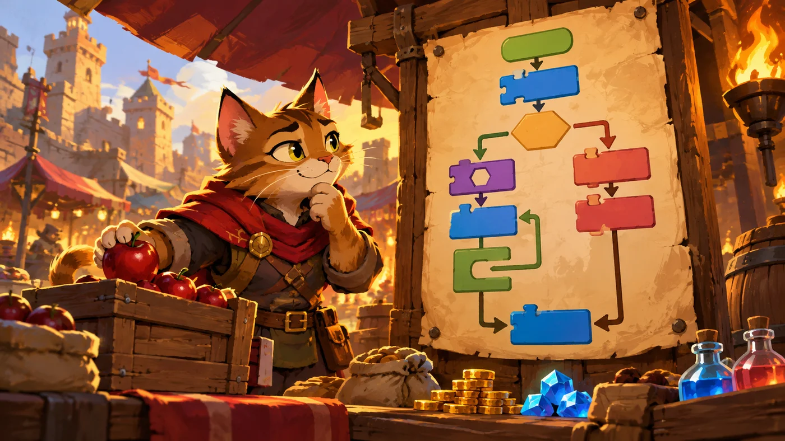
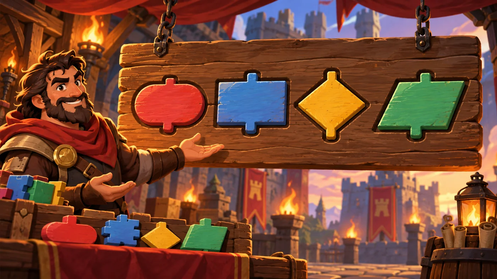

扣哒考级 · GESP 图形化 二级 · 第 2 单元 | 彩虹集市 RAINBOW BAZAAR
摊主的流程图 程序流程图
Flowcharts

安雅
红发队长 · 你的旅伴
集市每个摊位的柱子上都钉着一张羊皮纸。上面没有文字，只有一串方框、菱形和箭头。
你盯了一会儿，忽然看懂了：这就是摊主脑子里那件事的顺序。
"画出来，"摊主说，"连你自己都不会做错。"
你盯了一会儿，忽然看懂了：这就是摊主脑子里那件事的顺序。
"画出来，"摊主说，"连你自己都不会做错。"
安雅 · 红发队长
这一单元要认得四个符号：圆角框、矩形框、菱形框、平行四边形。考试最爱考两件事：菱形框有几条出口、哪张图里画了循环。 记住"菱形两条出口、循环有回头的箭头"，这两类题就稳了。
0 单元导语与目标
Before We Start
0.1 学习目标
- 知道流程图是什么，为什么要画它；
- 认得四个标准符号：起止框、处理框、判断框、输入输出框；
- 会用流程图画出顺序、分支、循环三种基本结构；
- 能按"先写步骤、再画框、最后连箭头"的步骤画一张流程图；
- 能把一张流程图翻译成一段积木脚本。
0.2 考纲对照
| 考纲知识块 | 考纲要求 | 本单元小节 |
|---|---|---|
| 2 程序流程图 | 程序流程图的基本概念、标准符号、基本结构、绘制步骤 | 1.1～1.2、2.1～2.3、3.1～3.3 |
| 3 克隆（预演） | （下一单元） | — |
| 4 三大基本结构（巩固） | 用流程图把顺序、分支、循环画出来 | 3.2 |
流程图是"写程序之前先想清楚"的工具。考纲二级专门列了一个知识块，' '说明它会单独出题——认符号、画结构、读流程，三样都要会。
1 为什么要有流程图
Why Flowcharts
1.1 图比字更清楚
摊主柱子上钉着一张羊皮纸，上面不是文字，而是一串方框和箭头。他指着说： "话说不清楚的事，画出来就清楚了。"

assets/illustrations/scratch-L2-02-02_stall_flow.webp
【配图位】热闹集市摊位柱子上钉着一张羊皮纸流程图，方框之间用箭头连接，一只猫商贩照图操作。（提示词见《GESP配图清单与AI绘图提示词》第四节 2-2）
打个比方：流程图就像菜谱上的步骤图——眼睛一扫就知道先干什么、后干什么、哪里要选。要是写成一大段文字，看三遍还未必理得清。
1.2 流程图里的三种结构
图 2（SVG）：三种基本结构在流程图里的样子
2 四个标准符号
The Standard Symbols
2.1 圆角框：起止
流程图的规矩是：什么形状，就代表做什么事。圆角框表示"开始"或"结束"，' '里面写"开始""结束"两个字。

assets/illustrations/scratch-L2-02-01_flowchart_signs.webp
【配图位】摊主木牌上刻着四种流程图符号——圆角起止框、矩形处理框、菱形判断框、平行四边形输入输出框，排列整齐。（提示词见《GESP配图清单与AI绘图提示词》第四节 2-2）
2.2 矩形框与平行四边形
图 4（SVG）：四个符号的含义
最容易考的一条：菱形只有一个入口，却有两条出口——一条标"是"，一条标"否"。这是判断框和别的框最明显的区别，也是考卷上最爱画错的地方。
2.3 菱形框：判断
打个比方：把流程图想成一条路：圆角框是路的两端、矩形框是直路、菱形框是岔路口。走到岔路口，路牌上写的条件成立就向左拐，不成立就向右拐——但两条路最后一定会再合到一起。
3 怎么画一张流程图
Drawing a Flowchart
3.1 先写步骤，再画框
图 5（SVG）：画流程图的四个步骤
3.2 三种结构的画法
图 6（SVG）：三种结构的画法
3.3 从流程图到积木
重点示例：一张流程图，一段脚本
图形化积木
流程图：先起止，再判断
对照记 圆角框（开始）↔ 帽子块；矩形框 ↔ 普通积木；菱形框 ↔ 六边形条件 + C 形判断积木
为什么老师总让你先画图？因为画得出来，说明你真的想清楚了。画流程图的功夫，最后都会变成写程序时的"一遍就对"。
4 判断框里写什么
Conditions in Diamonds
4.1 条件写在菱形里
菱形框里的文字，就是图形化编程里那个六边形积木的内容。' '它必须是一个能回答"是 / 不是"的句子。
重点示例：菱形里的条件和积木里的条件是一回事
图形化积木
要点 能写成"成立 / 不成立"的句子才能放进菱形；像"移动 10 步"这种动作，只能放进矩形框
4.2 常见画法对照
图 7（SVG）：判断框的正确与错误画法
和积木对照着记：菱形框 = 六边形条件积木，矩形框 = 普通积木，圆角框 = 事件帽子块，平行四边形 = 广播 / 说 / 询问这类"进出的口"。
5 代码实战
Level Practice
这一关把"想清楚再动手"演给你看：同样的路，写五遍和写一遍，差别有多大。
关卡 14
长厅
进入关卡 →
故事：
集市的长廊笔直地通向另一头，足足有五格远。新手会一格一格写下去——
但摊主只写了一句话，就把它走完了。
思路：先在纸上画一张流程图：开始 → 移动 5 步 → 结束。三个框、两条箭头，就完了。 对照着这张图拼积木，你会发现"重复执行"能把五个矩形框压成一个。
重点示例：流程图只有三个框
图形化积木
对照记 圆角框"开始" → 帽子块；矩形框"移动 5 步" → 移动积木；圆角框"结束" → 停止积木
自己试一试：如果长廊有一百格呢？写"移动 100 步"和写一百块"移动 1 步"，流程图上的框数差了一百倍。想清楚再动手，省的就是这些功夫。
这一关虽然简单，但它示范了一件重要的事：' 流程图上的每一个框，都能一一对应到一块积木。
流程图的真正用处：不是画着好看，而是把"想"和"做"分开——先在图上把逻辑理顺，写积木时就只是在做"翻译"了。
去扣哒世界闯这一关 →
6 常见陷阱
Common Traps
陷阱 1：把菱形框当成矩形框用。菱形里要写"条件"，不是"动作"。
正确做法：菱形里写"x > 10 ?"这类能判断对错的句子；"移动 10 步"这种动作要写进矩形框。
正确做法：菱形里写"x > 10 ?"这类能判断对错的句子；"移动 10 步"这种动作要写进矩形框。
陷阱 2：判断框只画一条出口。条件总有成立和不成立两种结果，所以菱形必须有两条出箭头。
正确做法：两条箭头上分别标"是"和"否"。
正确做法：两条箭头上分别标"是"和"否"。
陷阱 3：循环的箭头忘了绕回去。没有回头箭头的循环，在图上就变成了普通的分支。
正确画法：循环的"否"分支要拉一条箭头绕回上方的框。
正确画法：循环的"否"分支要拉一条箭头绕回上方的框。
陷阱 4：一张图有两个"开始"或没有"结束"。
正确做法：一张流程图一般一个开始、一个结束；如果有好几段独立的流程，就画成几张图。
正确做法：一张流程图一般一个开始、一个结束；如果有好几段独立的流程，就画成几张图。
7 题目练习
Practice
前 2 题改编自 2026 年 9 月 · 图形化编程 二级 第 2 题、2026 年 6 月 · 图形化编程 二级 第 2 题，其余为原创练习题。
改编自 2026 年 9 月 · 图形化编程 二 级 · 第 2 题单选题
在程序流程图中，圆角矩形符号通常表示（ ）。
A.输入 / 输出
B.判断 / 条件
C.开始 / 结束
D.处理过程
B.判断 / 条件
C.开始 / 结束
D.处理过程
查看答案与详解
答案：C。四个标准符号各不相同：圆角矩形 = 开始 / 结束、矩形 = 处理、菱形 = 判断、平行四边形 = 输入 / 输出。
A 错：那是平行四边形；
B 错：那是菱形；
D 错：那是矩形。
记忆窍门：圆角框长得像一颗药丸，"两头圆"——正好对应"一头是开始、一头是结束"。
对应小节2.1 圆角框：起止。
A 错：那是平行四边形；
B 错：那是菱形；
D 错：那是矩形。
记忆窍门：圆角框长得像一颗药丸，"两头圆"——正好对应"一头是开始、一头是结束"。
对应小节2.1 圆角框：起止。
改编自 2026 年 6 月 · 图形化编程 二 级 · 第 2 题单选题
有一段代码用来找出 1 到 100 之间偶数的个数。如果把它画成流程图，那么在图上标着 L1 的那一处——也就是代码里"这个数是偶数吗"那一行——应该用什么图形（ ）。
A.菱形框
B.椭圆形框
C.平行四边形框
D.圆形框
B.椭圆形框
C.平行四边形框
D.圆形框
查看答案与详解
答案：A。"这个数是偶数吗"是一个能判断对错的条件，流程图里判断一律用菱形框——它是唯一有两条出口的框。
B 错：椭圆 / 圆角框表示开始或结束；
C 错：平行四边形表示输入输出；
D 错：流程图里没有"圆形框"这个标准符号。（平行四边形常被误看成圆形，要分清）
对应小节2.3 菱形框：判断。
B 错：椭圆 / 圆角框表示开始或结束；
C 错：平行四边形表示输入输出；
D 错：流程图里没有"圆形框"这个标准符号。（平行四边形常被误看成圆形，要分清）
对应小节2.3 菱形框：判断。
原创练习题单选题
在程序流程图中，表示"判断"的标准符号是（ ）。
A.圆角矩形
B.矩形
C.菱形
D.平行四边形
B.矩形
C.菱形
D.平行四边形
查看答案与详解
答案：C。四个标准符号各司其职：圆角框是起止、矩形框是处理、菱形框是判断、平行四边形是输入输出。
记忆窍门：菱形有四个尖，正好像"分成两条路"；而且它是唯一一个有两条出口的框。
对应小节2.1～2.3 四个标准符号。
记忆窍门：菱形有四个尖，正好像"分成两条路"；而且它是唯一一个有两条出口的框。
对应小节2.1～2.3 四个标准符号。
原创练习题单选题
摊主的流程图里，菱形框写的是"商品数量 > 0 ？"，一条箭头标"是"、一条标"否"。这两条箭头最终应该（ ）。
A.永远不再相遇
B.汇合到同一个后续框
C.都指回"开始"
D.只保留"是"这一条
B.汇合到同一个后续框
C.都指回"开始"
D.只保留"是"这一条
查看答案与详解
答案：B。判断只是"选一条路走"，两条路走完之后，程序还要继续往下执行——所以要汇合到同一个后续框。
A 错：那样程序就分成了两条互不相干的路；
C 错：只有循环才会指回去；
D 错："否"那条路也是要走的，只是条件不成立时走它。
对应小节3.2 三种结构的画法。
A 错：那样程序就分成了两条互不相干的路；
C 错：只有循环才会指回去；
D 错："否"那条路也是要走的，只是条件不成立时走它。
对应小节3.2 三种结构的画法。
原创练习题单选题
下面哪种情形最适合用循环结构来画流程图（ ）。
A.做一次就结束的事
B.需要重复做很多遍、直到条件成立的事
C.要根据条件二选一的事
D.要显示一行文字的事
B.需要重复做很多遍、直到条件成立的事
C.要根据条件二选一的事
D.要显示一行文字的事
查看答案与详解
答案：B。"重复做很多遍直到条件成立"正是循环的定义，流程图上表现为有一条箭头绕回去。
A 错：那是最简单的顺序结构；
C 错：那是分支结构；
D 错：那是平行四边形（输出）的活儿。
对应小节3.2 三种结构的画法。
A 错：那是最简单的顺序结构；
C 错：那是分支结构；
D 错：那是平行四边形（输出）的活儿。
对应小节3.2 三种结构的画法。
原创练习题多选题
下面关于流程图的说法，哪些是正确的（ ）。
A.圆角框表示流程的开始或结束
B.矩形框表示要做的一件事
C.菱形框里既可以写条件，也可以写动作
D.平行四边形表示数据的输入或输出
B.矩形框表示要做的一件事
C.菱形框里既可以写条件，也可以写动作
D.平行四边形表示数据的输入或输出
查看答案与详解
答案：A、B、D。这三条正是三个符号的标准含义。
C 错：菱形里只能写条件（能判断"是 / 否"的句子）；写动作要用矩形框。
对应小节2.1～2.3 四个标准符号。
C 错：菱形里只能写条件（能判断"是 / 否"的句子）；写动作要用矩形框。
对应小节2.1～2.3 四个标准符号。
原创练习题判断题
在程序流程图中，循环结构一定包含一条"绕回上方"的箭头。（ ）
查看答案与详解
答案：正确（√）。循环的本质就是"做完一遍再回来做一遍"，在流程图上必然表现为一条箭头从下方绕回上方的判断框。
如果所有箭头都只往下走、没有一条回头，那这张图里就没有循环。
对应小节1.2、3.2 循环的画法。
如果所有箭头都只往下走、没有一条回头，那这张图里就没有循环。
对应小节1.2、3.2 循环的画法。
8 本单元小结
Unit Summary

贺舒曼 · 镜中先知
镜子里的世界是画出来的——这一单元你也在"画"。记住四个符号：
圆角起止、矩形处理、菱形判断、平行四边形输入输出；再记住三种结构怎么连箭头。
能把流程图默画出来，二级的图题就丢不了分。
你在摊主的柱子上学到了什么
- 四个标准符号：圆角（起止）、矩形（处理）、菱形（判断）、平行四边形（输入输出）；
- 菱形有两个出口，分别标"是"和"否"，最后要汇合；
- 三种结构：顺序（直着连）、分支（分两路再汇合）、循环（有箭头绕回去）；
- 画图四步：写步骤 → 换框 → 连箭头 → 检查；
- 图和积木对应：圆角↔帽子块、矩形↔普通积木、菱形↔六边形条件 + C 形判断。
下一站：旋转木马
流程图让你"看"清了程序的样子。下一单元我们回到积木上， 把二级新学到的两种重复、两种分支分清楚——旋转木马会告诉你， "转 N 圈"和"转到某个位置才停"到底差在哪。